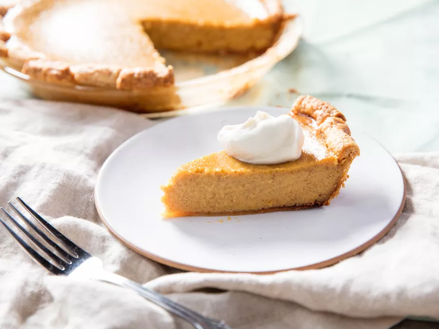

Pumpkin Pie

A Delicious Fall Dessert
When I think of pumpkin pie, I think of Fall.
As the weather starts to get cold, the warm spices in pumpkin
pie help to keep you cozy from the inside-out!
Ingredients
- 1ea frozen pie crust
- 425g pumpkin puree
- 360g heavy cream
- 160g brown sugar
- 6g sea salt
- 4g pumpkin spice mix
- 12g tapioca starch
- 110g whole eggs
- 15g egg yolk
Procedure
- Pre-heat oven to 450F
- In a mixing bowl, combine pumpkin puree and heavy cream, and whisk
together until homogenous
- In a separate bowl, combine brown sugar, salt, spice mix and
tapioca starch and whisk together
- Add whole eggs and egg yolk to the sugar mixture and whisk to
combine
- Pour the egg mixture in to the pumpkin mixture and stir with a
spatula until homogenous
- Pour the filling in to the pie crust and bake for 20 minutes
- Reduce the oven temperature to 350F and continue to bake for 30 more
minutes, or until the filling is set
- Let pie cool completely before serving; top with whipped cream
and enjoy!